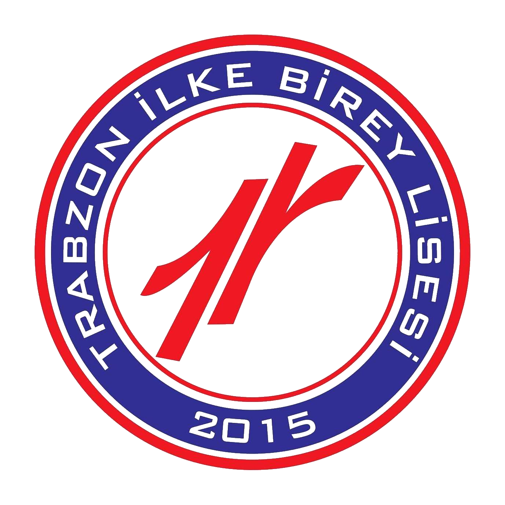

Academic / Education
Education
-
2025–PresentDoctor of Philosophy — Computer ScienceUniversity of GeorgiaAthens, GA
-
2018–2023Bachelor’s Degree — Computer EngineeringCukurova UniversityAdana, Türkiye
-

2017–2018High School — Science TrackIlke Birey Private High SchoolTrabzon, Türkiye